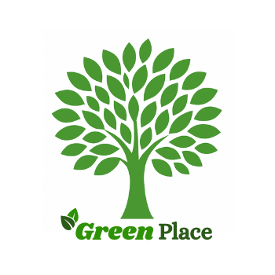

Sobre Mim
Olá! Me chamo Gabriel Neres de Araujo. Sou estudante do curso de Redes de Computadores no Instituto Federal da Paraíba. Tenho 19 anos e sou apaixonado por tecnologia e inovação. Meu objetivo à longo prazo é atuar como um profissional de DevOps. Durante alguns anos, trabalhei na realização de eventos e em cozinha industrial. Me adaptando assim a trabalhar sob pressão, identificar e resolver problemas de forma eficiente. Atualmente, estagio como analista de redes na empresa ViaNoc, curso minha faculdade e estou em busca de aperfeiçoar meus conhecimentos sobre cloud computing. Estou realizando o curso Re/Start AWS para tirar a certificação Cloud Practitioner. Estou em busca de novos desafios e aprendizados para me desenvolver como profissional e contribuir com o crescimento da empresa.
Meus Projetos
-

GreenPlace
Plataforma de conscientização ambiental para monitoramento de pegada de carbono e análise de dados para empresas. Desenvolvida em Python (Flask) com arquitetura modular e persistência em CSV, apresentando interface responsiva e dinâmica.
-
REsgate.bot
Sistema de automação com IA para denúncias de casos animais via apps de mensagem. Integração com Google Sheets e notificações automáticas para gestão ágil de ocorrências. Desenvolvido com n8n e JavaScript.
-
GuizinBrowser2000 CLI
Simulador de navegador web via CLI focado em gestão de histórico e hierarquia de URLs. Implementa estruturas de dados clássicas (Pilhas e Árvores) para organização eficiente de domínios. Desenvolvido em Python Modular.
Laboratórios
Contato
João Pessoa - PB